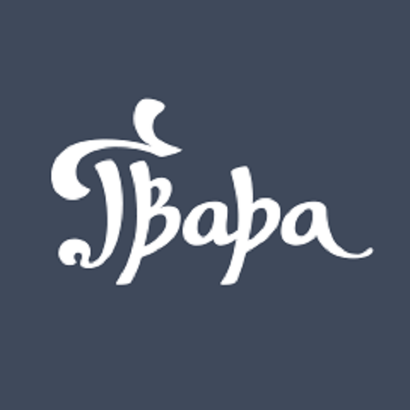

|  |
Львівська Ґвара |
або |
— міська говірка, що сформувалася у Львові в результаті змішання південно-західних говорів української мови та польської мови, зі значними домішками німецької та єврейської лексики за часів австрійського та польського панування.
| Львівська ґвара | Українська |
|---|---|
| А | |
| аґрафка | - 1. шпилька, 2. подруга |
| айнбрух | - вламання |
| аліво | - та де там |
| аліяс | - інакше |
| алярм | - тривога |
| академус, академік | - студент академії, університету |
| акомодуватися | - звикати, пристосовуватися |
| амант | - коханець |
| андрути | - вафлі |
| анцуґ | - одяг |
| аус | - кінець |
| Б | |
| бадиль | - бур’ян |
| баєр | - брехня |
| байґель | - булка (чотиридільна) |
| байриш | - пасмо волосся над чолом |
| байтлювати | - оббріхувати |
| бакфіш | - підліток |
| балабух | - тісто, що підійшло |
| балаґула | - візник |
| балак | - розмова |
| баламкатися | - хитатися |
| балватунцьо | - болван |
| балікати | - балакати |
| бальон | - ґумовий м’яч |
| банда | - оркестр |
| бандзьох | - великий живіт |
| банти | - драбинка для курей |
| банувати | - тужити |
| баняк | - каструля |
| банька | - іграшка на ялинку |
| бараболя | - картопля |
| батяр | - шибеник, хуліган |
| батярівка | - шапка шибеника |
| батярня | - збіговисько шибеників |
| баюра | - болото |
| безхосенно | - безкоштовно |
| бельбас | - товстун, незграбна людина |
| бельфер | - учитель |
| берелка | - прикраса |
| беретка | - берет |
| бесаги | - подвійний мішок через плече |
| бештати | - сварити |
| бздура | - дурниця |
| біба | - бенкет з великою кількістю алкоголю |
| бібулка | - папір, що вбирає вологу |
| біня | - дівчина |
| бісоватий | - шалений |
| билблати | - мовчати |
| блатувати | - залагоджувати |
| близна | - шрам, рубець від рани |
| блят | - кухонна плита |
| бовтати | - перемішувати |
| бонґу | - спирт |
| бранжа | - школярі |
| братрура | - духовка |
| бровар | - пивоварня, пиво |
| бронзовий | - коричневий |
| брусоватий | - необтесаний |
| буда | - школа |
| будний | - буденний, звичайний |
| буйда | - брехня |
| бульба | - картопля |
| бумцик | - танці |
| бухач | - злодій |
| бурмило | - неотесаний, некультурний |
| бусько | - лелека |
| бухт | - булочка з начинкою |
| бюро | - письмовий стіл |
| В | |
|
вазонок вакації вандер вантух варстат вар’ят васервага васериця ваха вахляж вегікул верета вітрівка вигинястий видайність вилоїти вимівка винниці виривати вицєчка відкнаятися відфастриґуватися вінда віха віц втраяти втриняти вшитка |
- вазон - канікули - мандрівка - живіт - майстерня - божевільний - рівень /техн./, ватерпас - вода - варта - віяло - віз - полотно - спортивна куртка - спритний, вправний - продуктивність - вичинити - оправдання - виноградники - втікати - екскурсія, мандрівка - відчепитися - відчепитися, «відшитися» - ліфт - жердина - жарт - багато їсти - змушувати когось щось зробити - виточка |
| Г | |
|
габіт гадра гадюґа гайту гайцер гайцовня галабурда галастра гальба гальсбіндель гальтувати галюкати галя гамати ганделес гандричитися гара гарататися гарбар гардиґа гачик гебес гебра герцпінкель гира гицкати глота глухман гойно голєндрування голодриґа город горпина гранадля гринь груньо гуляти |
- ряса, одяг монахів - сварлива баба - злосливець - прогулянка - помічник машиніста - паротяг - авантюра - збрід, зборисько - кухоль - краватка - затримати - кричати на когось - великий зал - їсти - торговець - сперечатися - горілка - битися - кушнір - старий будинок - кочерга - дурень - зборисько, збіговисько - пестунчик - чуприна - стрибати - 1.тіснота, 2.натовп - глухий - щедро - катання на ковзанах - обірванець - парк, сквер, сад - велика жінка - шилька для волосся - дурень - грубіян - танцювати |
| Ґ | |
|
ґалантий ґвер ґелайза ґелтуватися ґібіруватися ґлянц ґнипак ґніт ґраба ґрайфнути ґранатовий ґранда ґратіс ґрейцар ґудз ґуфрувати |
- елегантний - гвинтівка - кухоль - бути поважним - належатися - блиск - тупий ніж - дитина - рука - вкрасти - темносиній - ганьба - безкоштовно - гріш - вузол - морщити |
| Д | |
|
дараба двірець дебра декувати дефіляда дзявкати дзямдзя дзюня доовкола дрантя дрантявий драпак драчки дримбайло дрипця друмля дука дурх |
- пліт - вокзал - бездоріжжя - говорити грубо, нахабно - парад - заховати - той, хто поволі їсть - дівчина - довкола - старий одяг - старий, поганий - щітка для посуду - дрібні бійки - старий чоловік - стара жінка - музичний інструмент - багач, впливова людина - наскрізь, просто |
| Е | |
|
емерит емеритура етеричний |
- пенсіонер - пенсія - делікатний, повітряний |
| З | |
|
забездурно завди заволока загаманити загумінок заґудзовуватися задекуватися зазяпати заіванити зайдель закім заливайко замалювати запихатися запідкольки запідпашки зафраєр зафуркотати захоронка збуй збурити звурдитися здибатися зеленчук зелепухи зец зіхер злеополізуватися зліцитований золити зреванжуватися |
- безкоштовно - завжди - бродяга, приблуда - вкрасти - передмістя - заплутуватися - сховатися - вразити красою - вкрасти - склянка - доки - брехун - вдарити - засапатися - під руку - під пахи - безкоштовно - зашуміти - 1.дитячий садок, 2. сиротинець - розбійник - розвалити, зруйнувати - скиснути - зустрітися - прикордонник - недозрілі фрукти - бити - точно, обов’язково - спольщитися - проданий на аукціоні - бити - віддячитися |
| І | |
|
індекс інсуля інтенція інфамія |
- залікова книжка - оселя - намір - осуд, знеславлення |
| Ї | |
|
їдачка їздня |
- губа - дорога |
| Й | |
|
йойкати |
- нарікати |
| К | |
|
калабаня калакуньо каламація калапітра калапуцькати камрат капарити капцан капциліндер караба карабеля карамболь карменадля касарня катуляти кацап кварґель кербер кирея кібелик кібіцувати кікати кікс кімати кіндрус кінол кірити кітка кічка клапати клапачка клемпа клюски кнайпа кнаяти койдим колдувати колтунитися колюмна комерс конкури конфекція копула корба коцюрбатий коцмолюх кочкодан кріяндолі кругольня кулі кумати куншт куфер куча |
- калюжа - телепень - замішання, збентеження - голова - мішати - товариш - погано щось робити - людина до нічого - капелюх - кіт - крива шабля - зіткнення - котлета - казарма - котити щось кругле - дурень - сільський твердий солений сир - вахтер - плащ - глечик - вболівати - дивитися - помилка - спати - пустун - ніс - пити - кицька - городки (гра) - тріпати - рот - погана жінка - варене тісто, макаронні вироби - ресторанчик, забігайлівка - їхати, бігти - відважний - виглядати, придивлятися - лінуватися - стовп, колона - забава - залицяння - готовий одяг - церковна баня (купол) - ручка - малого зросту - бруднуля - неприємна особа - серпантин - приміщення для гри в кеглі - ноги - розуміти - майстерність - скриня - мала темна кімната |
| Л | |
|
лаба лабатий лапайдух (лапідух) лахуватися леберка лепета лискати лита літосердя люфтувати льокаль льокатори льоля льосування ляґер |
- лапа - незграбний - військовий санітар - насміхатися - спортивна куртка - голова - блискати - багатий чоловік - милосердя - провітрювати - 1. шинок, 2. квартира - мешканці - дівчина - жеребкування - вистояне пиво |
| М | |
|
мавпішон магуляти магулянка маґніфіка майстерштик майхер макабричний макаґіґи маківка маланка мамця манджати манелі мантель мантилепа маринарка масний матолок матура маціцький мацькатися мацько меґати меценас мециї ментикаптус мешти мигати микитити митка мишіґіне міґлянц мізерія мікрус мішкулянція мішмаш мішунк мокляки моняк мордівня москалик моторовий мудьо мулик мурґа мурин мурмило мурмурандо мустерунок |
- мавпа - бити - бійка - вельможна пані - зразок - ніж - жахливий - солодощі - голова - молода дівчина - приємна старша жінка - мандрувати - дрібниці - плащ, пальто - неохайна жінка - піджак - жирний - некмітливий чоловік - іспит зрілості, атестат про середню освіту - малесенький - бабратися - живіт - втікати - адвокат - делікатеси - дивак - черевики - втікати - обдурювати, збивати з пантелику - 1. ганчірка для миття посуду 2. пліткарка - не сповна розуму - спритна людина - салат - малюк - мішанина - суміш, мішанина - бійка - болотиста місцевість - гріш - забігайлівка - оселедець - водій трамваю - відлюдник, мовчун - муляр - нахаба - негр - похмура, понура людина - спів через ніс, мелодія без слів - вишкіл |
| Н | |
|
на бланк на галь-паль нагнітка накастлик накиваний на лінкс наобколо нахапати нездалий никати нюнька |
- без плаща - у поспіху - мозіль - нічна шафка - обдурений - їхати «зайцем» - навколо - назбирати - до нічого - шукати - безпорадний |
| О | |
|
оберхабка облаз ондуляція опанча ординація ости оферма оферта |
- хабар - гола стрімка скеля - завивка - широкий плащ - кабінет лікаря - риб'ячі кістки - незграба - пропозиція |
| П | |
|
пановля папендекель парцеля пательня пахняр пацалиха пацка паця пацюк паща пащекувати педалі педантерія пелехи перекинчик перекицки петрушкувати пипка пироги пискувати підлизайло пінда піпчити пітолко підфрувайка під хайром плюсква пляцок побережник повіцувати поводяни повседніти поготівля полігутко полікер пописуватися постерунковий потирайко потирча потрава пражити преферк прецель прикляйструвати приліпка принука пришпилити прохід прощацький пруга псоти пструг путня |
- звертання до друзів - картон - ділянка землі - сковорода - ніс - забава - удар - порося - свиня - рот - багато, грубо говорити - ноги - педантичність - довге волосся - зміна варти - перекидатися - бути одиноким - соска - вареники - говорити нахабно, грубо - підлиза - дівчина-підліток - натискати - мало шанований - підліток - під присягою, «слово чести» - суперечка, розбрат - 1. солодкий пиріг, 2. щось плескате - лісник - пожартувати - постраждалі від повені - байдужіти - аварійна служба - потихеньку - поліцай - хизуватися - дільничний - той, що поневіряється, без притулку - невдаха - страва - варити - преферанс - бублик - приліпити - окраєць хліба - заохочення - причепити - прогулянка, мандрівка - примітивний - шрам - збитки - форель - відро |
| Р | |
|
радирка райдати рапатий рата ревія рейвах рекомпенсата респект ресторація рефектар рехт ригати рило римунда ринка ринва рипатися рихтувати риськати рікцуґ рура |
- ґумка для стирання - довго розмовляти - шорсткий - частина належної платні - показ - розгардіяш - відшкодування - повага - ресторан - їдальня - мати рацію - кашляти - лице - зла жінка - сковорода /деколи - каструля/ - водостічна труба - шарпатися - 1. готувати, 2. ремонтувати - копати - відступ, відхід - 1. труба, 2. духовка |
| С | |
|
саламаха саліна сальва сальон сильвета сирена свірк свіркувати святити селедець сиромудрий скарловатіти скікати скіла скрипти смаровоз смитрати смок собачити сотний спацер специфіндер спухляк стирка стопка стравоспис страхопуд стрик стрих стрільба студенина сумер сутерини |
- суміш - копальня солі - салют, залп - вітальня - силует - русалка - дивак - сходити з розуму - бити - 1. оселедець, 2.краватка - мудрагель - виродитися - скакати - пес - друковані навчальні посібники - бруднуля - красти - дракон - сварити - великий - пішохідна прогулянка - спритник - товстун - повія - запобіжник - меню - перестрашений - зашморг - горище - рушниця - холодець - хліб - підвальне житло |
| Т | |
|
табльо такой талапатися тамуватий тарабанитися тектура телепатися терко термінатор терціян тирпати тицувати тори трема тримбулька тринґельд триндатися тримудка трочок туманити тургати тягом |
- спільна фотографія - однак - плюскатися - маломовний - тяжко йти - картон - трястися - тертка - помічник майстра - шкільний сторож - потрясати - жартувати - колія - страх - маленька зелена цибуля - чайові - переїжджати - комод - стрічка - дурити - совати, тягати - постійно |
| У | |
|
ужитківець уздровисько урльоп |
- користувач - курорт - відпустка |
| Ф | |
|
фабули файрант фалювати фамула фана фанфарон фарфоцлі фасувати фафрати фафулястий фацка фелєр ферії фертіґ фестин фіси фіфак фляки флямма фóльга форікувати фортекляп фоса фрайда фриґати фризієр фризура фронт фунястий фуньо фурдиґарня фуркати фурт |
- повні щічки - кінець робочого дня - йти - сім’я - хоругва, прапор - хвалько - лахміття - щось дістати - невиразно говорити - повнолиций - удар - помилка - канікули - готовий - святкова забава - ноги - спритна людина - нутрощі - дівчина - відлига - атакувати - фортепіано - рів - радість, - їсти - перукар - зачіска - перше місце, попереду - надутий - зарозумілий - в’язниця - дмухати - надалі, постійно |
| Х | |
|
хабаль хабал хабліна хавіра хайдер халупа харкатися хатрак хатранка хилкати хідник хірити хірний хірус |
- прихильник, залицяльник - бур’ян - безформне м’ясо - помешкання - жидівська школа - помешкання - сваритися - поліцейський агент - поліцейська облава - колисати - тротуар - пити горілку - п’яний - пияк |
| Ц | |
|
цваєр цвайкепеле цванціґер цвібак цвікер цент цепака цимбергай цимес циферблат цюхрати цьомати |
- двійка - дуже мудрий - дрібна монета (два австрійські талери) - бісквіт - окуляри - гріш - хам - гра на столі монетами у ворота - щось дуже добре - лице - грати на муз. інструменті - цілувати |
| Ч | |
|
черепаха чиншівка чуркало чухратися |
- підозрілий тип - орендоване житло - джерело - драпатися |
| Ш | |
|
шалапута шантрапа шапокляк шац шварц швидрига швімки швіцувати щипка шістак шкіра шкраб шкут шлюс шляйфи шмельц шмондзя шмуляти шнадалавий шпанегля шпанувати шпарувати шпацірґанґ шперка шпіляти шпондер шпортати шпрехати шпурт шраги шрайбувати штайгувати штайфувати штанети штиляти штимувати штімунг штрека штубацький штудерний штука штуркати штурпак шубер |
- бездумний - нехлюйська жінка - капелюх - гарний - паста для взуття - швець - плавки - важко працювати - тріска - 10 грошів - дівчина - учень молодшого класу - малюк - кінець, завершення - ковзани - непотріб - нехлюйська жінка - ходити - заморений, виснажений - кнопка для прикріплювання паперу і под. - натягати - економити, збирати кошти або що инше - прогулянка - сало - грати - грудинка - рити - говорити - швидкий біг - конструкція для пиляння дерева - писати - швидко йти - крохмалити - штани - кульгати - погоджуватися - добрий настрій - колія - дитячий - хитрий - мистецтво - штовхати - недовчений - засувка для комина |
| Ю | |
| юхтити | - красти |
| Я | |
| яндрус | - відчайдух, хуліган, авантурник |